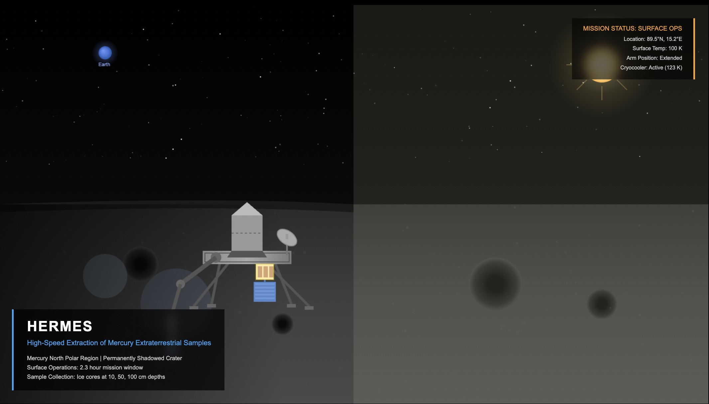
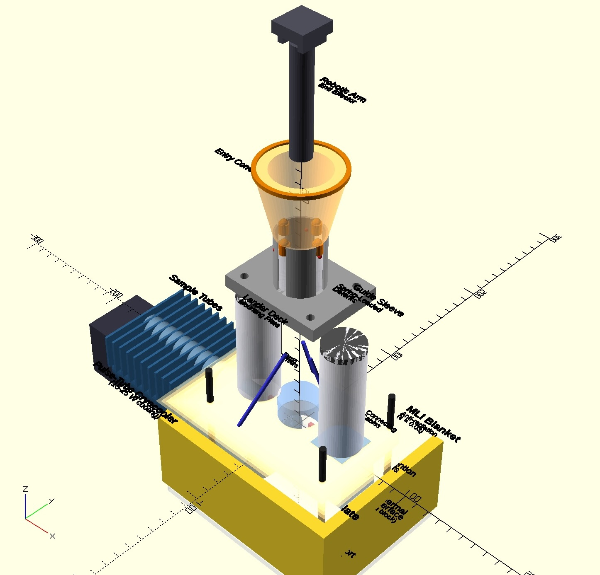
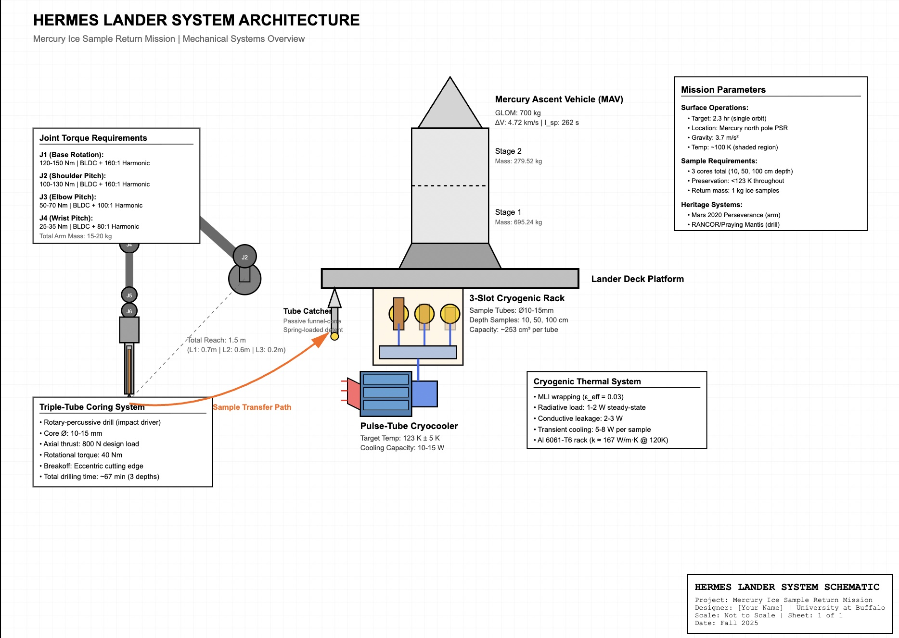
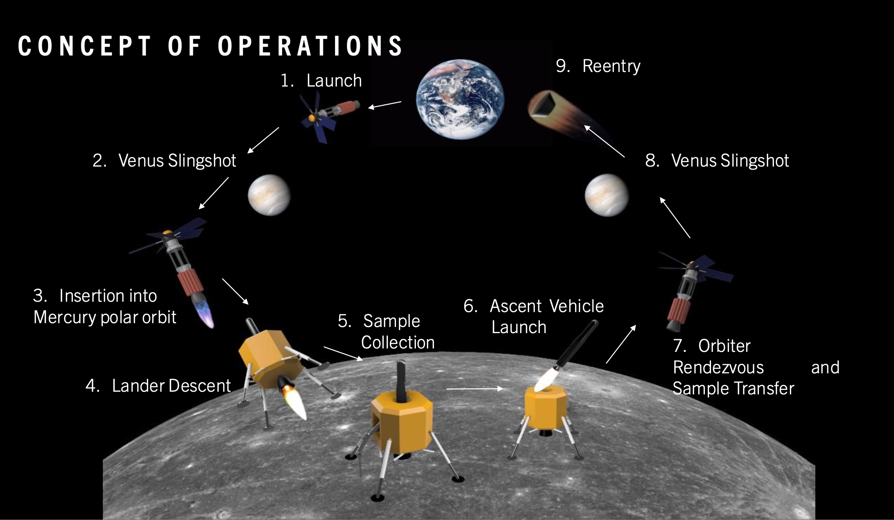
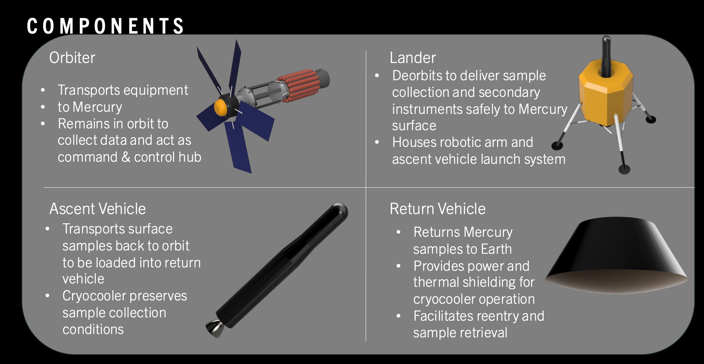

HERMES Mercury Ice Sample Return Mission

Spacecraft Systems Design · Cryogenic Mechanisms · Robotic Manipulation · AIAA 2026
HERMES is a conceptual Mercury polar ice sample return mission designed to collect and preserve volatile samples from permanently shadowed craters. As lead designer on a three-person team, I was responsible for the full lander system architecture — including cryogenic storage, robotic manipulation, and ascent vehicle integration. The project was presented at the 2026 AIAA Region I Student Conference at the University of Maryland.
Role
- Role: Lead Mechanical Designer
- Team size: 3
- Presented: AIAA Region I Student Conference, University of Maryland, April 2026
What I Worked On
- Designed the full lander mechanical architecture, integrating cryogenic storage, robotic sample collection, and ascent vehicle interfaces
- Developed cryogenic storage system requirements for preservation of volatile ice samples in Mercury's thermal environment
- Designed robotic manipulation architecture for sample acquisition in permanently shadowed crater conditions
- Led team coordination and technical presentation at AIAA Region I Student Conference
Tools
Results
- 66.93-minute drilling timeline for three-depth sampling sequence
- 15-20kg total arm system mass with 1.5-2.0 safety factors on all joint torques
- Sample preservation at 123K ± 5K throughout surface operations and orbital transfer
Mission Architecture Context
2032 launch | Earth-Venus gravity assists | 2036-2037 Mercury polar orbit insertion | 2.3-hour surface operations | Sample return via orbital rendezvous
This project strengthened my ability to design and integrate complex mechanical systems under extreme environmental constraints — a foundation I'm applying toward a career in aerospace and defense engineering.
Gallery

Cryogenic sample storage system designed in OpenSCAD: 3-slot aluminum rack (Al 6061-T6) thermally anchored to pulse-tube cryocooler cold head maintaining 123 K ± 5 K. Passive funnel-cone tube catcher with spring-loaded detent guides 10-15 mm diameter sample tubes from robotic arm into thermally conductive slots. System manages 10-15 W heat load (radiative + conductive + transient sample cooling) with MLI wrapping (ε_eff = 0.03).

Concept Art: HERMES lander concept during surface operations. Robotic arm is shown extracting ice core samples while the cryocooler maintains sample preservation at 123 K.

Mission ConOps showing complete sample return workflow: gravity-assist trajectory optimization through Venus flybys, polar orbit insertion at 480 km altitude, rapid surface operations in permanently shadowed crater, and orbital rendezvous for Earth return (Diagram: Emmett Leader).

Integrated mission architecture: Orbiter provides navigation and communication infrastructure, Lander executes surface sampling with robotic arm and cryogenic preservation, Ascent Vehicle performs orbital rendezvous, and Return Vehicle maintains sample integrity through Earth return and recovery (Diagram: Emmett Leader).